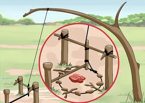

ϩⲁϫⲓ B v ϩⲁϭⲉ
(noun male)
snare [βροχος]

complete
742b
744a
744a
ϩⲁϭⲉ, ϩⲁⲁϭⲉ S, ϩⲁϫⲓ B nn m, snare: Pro 6 5 S (cit BAp 148 ϩⲁⲁ., A ⲁⲗⲟⲩ) B, 1 Cor 7 35 B (S ⲉⲗⲱ) βρόχος; Eccl 7 27 S (var cit Mor 43 254 ϭⲟⲣϭⲥ) δεσμός; TEuch 2 475 B ⲛⲓϩ. of devil مخانق; P 44 88 S ϩⲉⲛϩⲟϭⲉ اشراك; PS 100 S ⲛϭⲟⲣϭⲥ, ⲛϩ., Mor 43 222 S ⲛϩ. ⲙⲛⲙⲙⲣⲣⲉ ⲙⲡⲙⲟⲩ, ib 28 44 S ⲁⲓⲥⲉⲕ ⲟⲩⲟⲛ ⲛⲓⲙ ϩⲁⲛⲁϩ., MG 25 146 B eagle soaring escapes ⲫⲁϣ, if descends is taken in ⲛⲓϩ., O'Leary Th 25 B ⲁϥϩⲉⲓ ϧⲉⲛⲡⲓϩ.; ⲙⲉⲧϩ. B: TRit 426 ϯⲙ. ⲛⲧⲉ ϯⲉⲡⲓⲑⲩⲙⲓⲁ اختناق.
In place-names (this word ?): ϩⲁϭⲉ, ⲧⲙⲟⲩ ⲛϩ., ⲧⲟⲟⲩ ⲛϩ., ⲧⲱϩⲱ ⲛϩ. (LMis 47, WS 180 n), ϩⲁⲁϭⲉ (P 12915 24).
See also:
| view | ⲱϭⲧ SLF ⲱⲧϭ, ⲱϫⲧ S ⲱϫϩ B ⲉϭⲧ-, ⲟϭⲧ⸗, ⲟϫⲧ⸗, ⲟⲧϭ⸗ S ⲁϭⲧ⸗ ALF ⲉϭⲧ⸗ L ⲟϫϩ⸗, ⲟϩϫ⸗ B | (verb) tr: choke, throttle [πνιγειν]106 |
| view | ⲁⲗⲱ, ⲉⲗⲱ S ⲁⲗⲟⲩ A plural: ⲁⲗⲟⲟⲩⲉ, ⲉⲗⲟⲟⲩⲉ S | (noun) snare, trap425 |
| view | ⲡⲁϣ S ⲫⲁϣ B | (noun male) trap, snare [παγις]1299 |